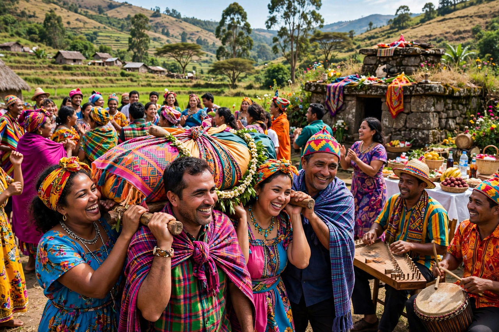

| Famadihana | |
|---|---|
| Type | Funerary tradition |
| Region | Central Highlands, Madagascar |
| Practised by | Merina and Betsileo peoples |
| Also known as | "The turning of the bones" |

Famadihana is a funerary tradition of the Malagasy people in Madagascar. During this ceremony, known as the turning of the bones, people bring forth the bodies of their ancestors from the family crypts, rewrap the corpses in fresh cloth, and rewrite their names on the cloth so they will always be remembered. Then they dance to live music while carrying the corpses on their shoulders and converse with them, telling them family news.
The practice reflects the belief that the spirits of the dead do not join the ancestors until the body has fully decomposed and appropriate ceremonies have been performed. The razana (ancestors) act as intermediaries between the living and God (Zanahary), so honouring them maintains harmony for the family. Famadihana is held during the dry season, typically every five to seven years for a family tomb.
A famadihana is both a solemn ritual and a joyous festival, with feasting, music from hiragasy troupes, dancing and the consumption of rum. Large family gatherings reunite relatives from across the country. In recent decades the cost of the ceremony and concerns about disease transmission have led some families and churches to discourage the practice, but it remains a central expression of Malagasy identity in the highlands.
See also: Madagascar · Merina people · Ancestor veneration